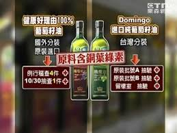

首頁
當然業者要負上很大的責任，可不只是食品廠商，有讀者更揭露，「通路商要求進貨高毛利，低末端售價，壓榨廠商，廠商僅能降低產品成本，促使無法負荷的商家使用低劣品質」。凡此種種，都是社會共業，唯有每個利害關係人各盡本份，做好自己在食品供應鏈中的角色，停止傳播錯誤的資訊，才能從根本上解決食安問題。

對於國際食品公司，履行CSR是永續經營的基本條件，國內食品業者的CSR意識卻相當匱乏。直至金融監督管理委員會在2014年底宣佈，規定上市上櫃的台灣食品業撰寫CSR報告書之前，只有3家業者自發編製。平心而論，除了業者，台灣民眾對CSR的認知亦見不足，4年過去了，竟有近6成人對此項規定表示不知情。

連到第一頁
連到第二頁
連到第三頁
連到第五頁